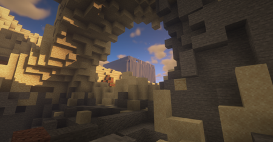

Minecraft Nether Portal Guide
By: Chloe
Introduction
If you're a fan of Minecraft, you know that exploring the Nether is a thrilling experience that requires a bit of preparation. The Nether is a dangerous place, full of hostile creatures and treacherous terrain, but it's also home to rare resources and exciting adventures. To access the Nether, you need to build a Nether portal, a mystical gateway that will transport you to the fiery dimension. But building a Nether portal can be challenging, especially if you're a new player. In this guide, we'll take you through the steps you need to follow to build a Nether portal and share tips and tricks to make your journey to the Nether a success.
Previous subheadings:
- Why You Should Visit the Nether in Minecraft
- The Materials You Need to Build a Nether Portal
- Step-by-Step Guide to Building a Nether Portal
When adventuring in Minecraft, visiting the Nether is a must-do experience. As mentioned in our previous subheadings, there are many reasons why you should step foot into this fiery realm, but before you do, you need to build a Nether portal. Building a Nether portal isn't a simple task, but with our guide, you can rest assured that the process will be as easy as possible.
Gathering the right materials is the first step to building a Nether portal. By following our suggested materials, you can ensure that your portal is sturdy and reliable, meaning you can easily travel between worlds. Our step-by-step guide will take you through the entire portal building process, ensuring that you don't miss a single step.
Once you've built your portal, it's time to take the plunge into the Nether! But entering a new dimension can be intimidating, so we've included tips and tricks to help you survive in the Nether. From finding rare resources to avoiding dangerous creatures, our guide will help you navigate this treacherous realm. With our expert advice, you can enjoy all the wonders that the Nether has to offer.
In summary, this guide is your ultimate resource for exploring the Nether in Minecraft. With our help, you can build a Nether portal with ease and prepare for a thrilling adventure. So why wait? Begin your journey to the Nether now!
ad space
Materials Required
Before entering the Minecraft Nether Portal, players need to gather specific materials. In this guide, we will take a closer look at the items needed to make a Nether Portal and the best ways to obtain them.
The first item needed to make a Nether Portal is Obsidian. Obsidian is a volcanic block that can be found in specific areas within the Overworld. It can also be obtained by pouring water over lava. To create the correct structure for the Nether Portal, players will need to mine ten blocks of Obsidian; four blocks will be used as the frame, while the remaining six blocks will be used to create the portal.
After obtaining Obsidian, players will need to collect Flint and Steel. Flint and Steel can be crafted by combining a piece of Flint and an Iron Ingot. Once players have the materials, they can build the frame for the Nether Portal by placing four blocks of Obsidian in a rectangular formation. After, players need to light the Obsidian blocks using Flint and Steel, which will activate the Nether Portal and transport the player to the Nether.
While crafting the Nether Portal may sound simple, obtaining the necessary materials can prove challenging. Obsidian can be difficult to locate, and players may have to use creative strategies such as using water to create Obsidian or trading with villagers for Obsidian. Flint and Steel may also prove difficult to find, as Iron Ingots are often scarce in the early stages of the game.
Overall, the process of building a Nether Portal in Minecraft requires specific materials and can prove challenging. However, with small steps and thoughtful planning, players can gather the required items to venture into the Nether and unlock the many adventures and rewards that await them there.
ad space
Building the Portal
Creating Your Minecraft Nether Portal: A Step-by-Step Guide
As any Minecraft player knows, building a Nether portal can be a daunting task. But fear not! With this step-by-step guide, you'll be able to construct your own portal in no time.
First things first, make sure you have all the necessary materials. You'll need at least 10 Obsidian blocks, a Flint and Steel, and a pickaxe. Obsidian can be found naturally in the game, or you can make it yourself by pouring water over lava. Be sure to bring enough materials to create a 4x5 portal frame.
Once you have your materials ready, find a suitable location for your portal. It's important to note that portals must be on a solid surface, so find a spot without any holes or gaps. Once you've found your spot, start building your frame. Place your Obsidian blocks in the shape of a rectangle - four blocks wide and five blocks tall.
Next, it's time to light the portal. Use your Flint and Steel to ignite the inside of the frame. Once the portal is lit, it will create a purple vortex that you can jump into.
But before you jump in, make sure you're prepared for the Nether. The Nether is a dangerous place full of new enemies and obstacles, so be sure to bring plenty of resources and weapons.
Once you're ready, jump into the portal and explore the Nether! And don't forget to come back to the Overworld by jumping through the same portal you entered from.
Now that you know how to build a Nether portal, the possibilities are endless. Happy exploring!
ad space
Entering and Exiting the Nether
Are you tired of getting lost in the fiery depths of the Nether in Minecraft? Don't worry, we've got you covered. In this guide, you'll learn everything you need to know about entering and exiting the Nether, safely and efficiently.
Entering the Nether can be a daunting task, but with the right preparation, it can be a breeze. The Nether is a different dimension in Minecraft, accessible via a Nether Portal. To build a portal, you'll need Obsidian blocks and Flint and Steel. Once the portal is built, light it up with the Flint and Steel and step through.
Once you're through the portal, it's important to take note of your surroundings to make a safe exit. It's easy to get disoriented in the Nether, as everything looks the same in every direction. It's recommended to mark your portal's location with a sign or a distinct block to prevent getting lost.
Exiting the Nether can be tricky if you're inexperienced. When you're ready to leave, make your way back to the portal you came through. Don't forget to take note of landmarks to help you find your way back. Once you find the portal, step through and you'll be safely back in the Overworld.
But watch out, because entering and exiting the Nether isn't always as simple as it seems. The Nether is filled with dangerous creatures like Blaze, Ghasts, and Zombie Pigmen, not to mention the ever-present threat of lava. It's important to gear up and travel with caution.
In conclusion, entering and exiting the Nether in Minecraft can be a daunting experience, but with the right preparation and knowledge, you can navigate it like a pro. Always remember to mark your portal's location, protect yourself from danger, and take note of landmarks to make a safe and speedy exit. Happy Minecrafting!
ad space
Precautions in the Nether
The Nether is a dangerous place in Minecraft, filled with hostile mobs and treacherous terrain. As players venture through the fiery dimension, it's essential to take precautions to stay safe and avoid being caught off guard. In this guide, we'll explore the essential precautions players should take when exploring the Nether, from protective gear to awareness of potential dangers.
First and foremost, players should ensure they are properly equipped for the journey ahead. A full set of fire-resistant armor will provide much-needed protection from the Nether's scorching environment, while a good sword and bow will help fend off hostile mobs. Additionally, players should bring along plenty of food, as the Nether is devoid of natural resources and can quickly drain one's hunger meter.
Before entering the Nether, players should also take note of their surroundings, marking their entry point with a unique block or landmark. The Nether can be disorienting, and without a clear path back to the Overworld, players risk becoming hopelessly lost.
Navigating the Nether's terrain can be hazardous as well, with towering lava falls and bottomless chasms waiting to swallow unsuspecting players. Building a temporary bridge or tunnel can provide a safe path across treacherous terrain, while placing blocks or torches can help mark potential hazards ahead.
Finally, players should always be aware of their surroundings and keep an eye out for potential threats. Blaze and Ghast mobs can strike from a distance, while Zombie Pigmen will become hostile if provoked. Keeping one's cool and remaining vigilant can be the difference between a successful expedition and a disastrous one.
In conclusion, the Nether is a perilous place, and taking precautions is vital to a successful journey. Proper gear, awareness of one's surroundings, and caution when navigating the terrain can help players stay safe and enjoy all that the fiery dimension has to offer. Stay prepared, stay alert, and happy exploring!
ad space
Conclusion
After Hours of Gameplay, Here's What You Need to Know
Exploring the Nether can be one of the most exciting parts of Minecraft gameplay, but it can also be one of the most daunting. With endless caverns, hidden fortresses, and elusive mobs, it can be hard to know where to start. That’s why we’ve put together this guide to help you navigate the Nether and come out on top.
Throughout this guide, we’ve covered everything you need to know about navigating the Nether, setting up a base, and defeating the Wither. We’ve given you tips and tricks for avoiding danger, finding resources, and staying alive in this challenging dimension. And we’ve explained how to construct your own Nether portal to transport you to this dark and dangerous world.
But now that you’ve explored the Nether and mastered its secrets, it’s time to wrap things up. In this conclusion, we’ll summarize everything we’ve covered in this guide and give you some final tips for getting the most out of your Nether experience.
Firstly, we’d like to emphasize how important it is to come prepared. The Nether is full of dangers and surprises, so make sure you have enough food, armor, and weapons to handle anything that comes your way. We also recommend setting up a base camp with plenty of supplies and resources so that you won’t get caught out in the open.
Secondly, we’ve shown you how to find some of the most valuable resources in the Nether, including glowstone, quartz, and Netherite. Make sure you take advantage of these opportunities and don’t leave anything behind!
Finally, we’ve explained how to defeat the Wither, one of the toughest bosses in the game. This will give you access to some of the best loot in the game, so it’s well worth the effort.
Overall, we hope this guide has been helpful in your Nether adventures. Remember to stay safe, come prepared, and have fun exploring this fascinating and dangerous dimension. Good luck!
ad space